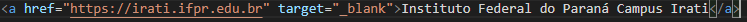
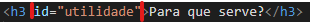
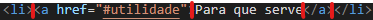
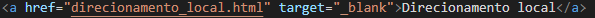
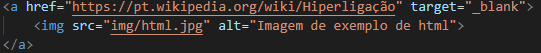
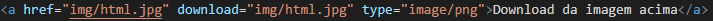

Hiperlinks servem para nos guiar de uma página a outra por meio de textos ou imagens marcadas, assim ajudando na navegação pelo site e facilitando o acesso a diversos temas.
Funciona usando um comando ao qual adicionamos em determinado texto ou imagem, e no mesmo comando, colocamos um endereço para o qual vamos ser direcionados ao clicar. Esse direcionamento pode variar entre remotos, internos, locais e com endereço de correio ou arquivos.
Falando sobre as sitáxes agora, na linguagem de marcação de texto, usamos a tag < a > e a continuação do código que irá nos direcionar para o endereço desejado.
Agora nós vamos falar sobre cada uma de suas variações.
São links que referenciam a sites externos, feitos por outros autores por exemplo
Sintáxe:
A sintáxe acima funcionaria como no link abaixo:
Vou aproveitar o exemplo acima para explicar o que é o "target". Resumindo, temos dois tipos de target principal, o _blank e o _self. O primeiro serve para quando clicarmos, ele abrir o direcionamento em uma nova guia, já o segundo funciona para, quando clicarmos, substituir a guia aberta pelo direcionamento.
Um exemplo de _self está no link abaixo:
Esse link funciona de um jeito que direciona o usuário para um lugar diferente, mas na mesma página. O exemplo abaixo foi o usado nesse mesmo site ao qual você está lendo isso.
Sintáxe:
Para usarmos esse hiperlink, nós precisamos de um id que será colocado no local ao qual queremos ser direcionados. Para isso, existem dois tipos de tag:
E então, após colocar o id, colocamos o hiperlink ao qual queremos ser direcionados:
Esse hiperlink serve para nos direcionar a outras páginas dentro do mesmo site.
Sintáxe:
A sintáxe acima funciona como no link abaixo:
Esse hiperlink serve para abrir um endereço ao clicar na imagem marcada.
Sintáxe:
A sintáxe acima funciona ao clicar na imagem abaixo:
Esse hiperlink se trata de um link que direciona a um endereço eletrôlico, ou seja, um e-mail.
Sintáxe:
A sintáxe funciona como no endereço abaixo:
Por último, mas não menos importante, temos o hiperlink para download de arquivos, que como o nome já diz, ao clicar, irá baixar algum arquivo em expecífico.
Sintáxe
A sintáxe acima funcionará como está embaixo: